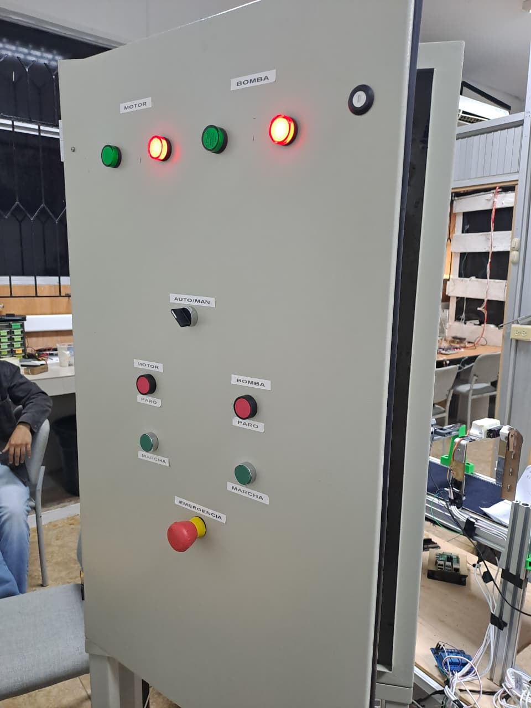
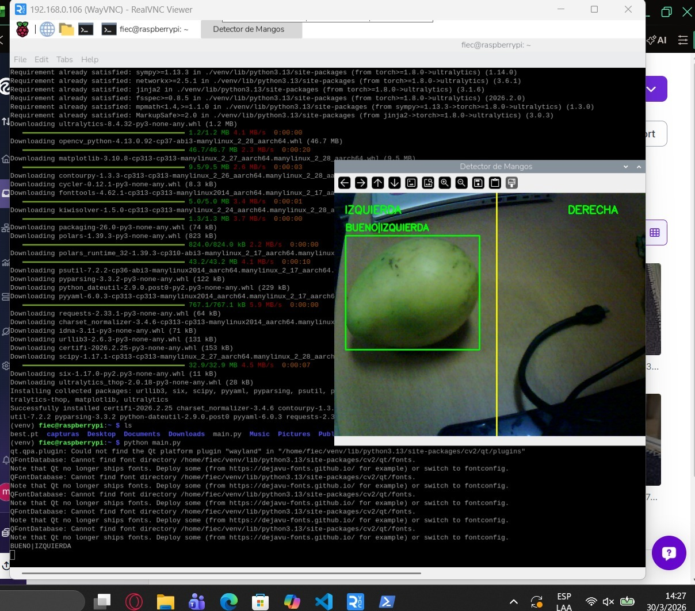

La Fábrica de
Frutas Inteligente
Una planta que lava, inspecciona y empaqueta mangos automáticamente usando inteligencia artificial, visión por computadora y control industrial. Construida por estudiantes de la ESPOL para transformar la agricultura del Ecuador.
Flujo del proceso — Haz clic en una etapa para explorarla
Explora cada etapa
Selecciona una etapa para ver sus componentes y entender cómo funcionan
El jacuzzi de los mangos
Todo empieza aquí. Los mangos se sumergen en la tina para quitarles el polvo del campo. Una bomba hace circular el agua — y lo mejor: esa misma agua se filtra y se reutiliza. Cero desperdicio.
Componentes del sistema

El cerebro y los nervios
Ese gabinete metálico con luces y botones es el centro de mando. Desde aquí se decide qué enciende, qué se apaga, y cómo reacciona la máquina ante cada situación. Puede operarse en modo manual o automático.
Componentes del sistema

El ojo que nunca descansa
Una cámara analiza cada mango que pasa por la banda transportadora. Un algoritmo de IA decide en fracciones de segundo si la fruta está en buen estado o tiene defectos. Nunca se cansa, nunca pierde un detalle.
Componentes del sistema
El toque final: sellado hermético
Las frutas clasificadas como aptas llegan al final del camino. Se agrupan en cantidades exactas y se sellan en fundas plásticas para que no entre aire ni suciedad, manteniendo el mango fresco por mucho más tiempo.
Componentes del sistema
¿Cuánto aprendiste?
Pon a prueba lo que viste sobre la Planta IA